“Given starting environment scene and a goal, can video model demonstrate a series of manipulations to get the job done?”
Same start image and goal for a correct human recording and six video models. Each number is the model’s overall human-rated Final score, and each video is one example generation.
TL;DR We record 110 everyday manipulation tasks and ask six video generators to finish each one from a single start frame. Even the best model, Seedance-2.0, completes only 67.8% of the task and scores 64.0 Final under human rating, and 88.7% of failed steps happen because the model skips a step or only partly carries it out, which leaves later steps without the state they depend on. Ego2ActJudge scores these videos without a reference and agrees with human ratings (r = 0.69) more closely than existing evaluators.
Full Abstract
Video generation models are increasingly being explored as world simulators for embodied planning and learning. To do so effectively, these models must not only generate visually appealing frames, but also predict how environments dynamically evolve when executing goal-directed actions. While evaluating these capabilities is crucial, existing benchmarks focus mainly on single short actions or step-by-step instructions. This leaves multi-step physical reasoning underexplored, especially in egocentric video generation that requires planning to simulate proper execution to accomplish high-level goals by carrying out multiple real-world manipulations. We introduce Ego2Act, a goal-directed benchmark featuring 2,640 videos from 110 real-world tasks across day-to-day settings, varying object clutter and multi-step complexity. Given an initial scene image and a high-level goal, Ego2Act evaluates whether video generation models can produce realistic egocentric videos of a hand manipulating objects to carry out the task. To support scalable evaluation, we also introduce Ego2ActJudge, a reference-free evaluation pipeline that achieves better task completion and physics plausibility evaluation alignment with human consensus compared to relevant baselines. Our findings reveal that models’ generated simulations often skip or partially execute steps, leaving later steps missing dependent states, which leads to unfulfilled goal. Furthermore, models consistently fail at fine-grained physical dynamics, particularly during complex object manipulation and persistent world modeling. We hope Ego2Act provides a rigorous testbed for advancing video models toward physically plausible, goal-directed simulation.
The Ego2Act Benchmark
Every case starts from one real scene and one everyday goal, and grows into a full set of human and generated videos that Ego2ActJudge scores.
- 110Start image and goalreal egocentric tasks in everyday settings
- 660Human recordings3 correct and 3 wrong attempts per task
- 1,980Generated videos6 generators with 3 seeds each
- 2,640Videos scoredEgo2ActJudge gives each one a Task, Physics and Final score
Benchmark Statistics
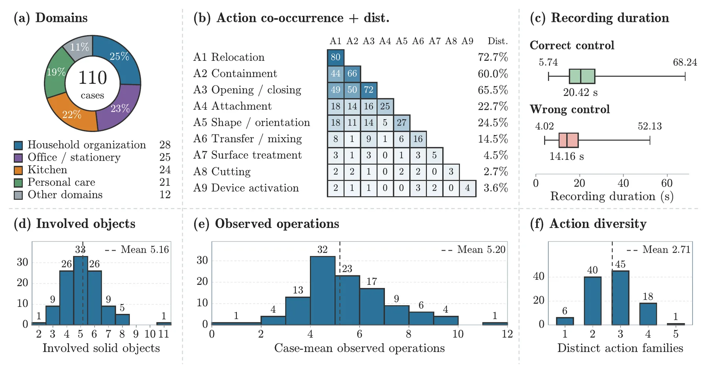
Evaluation Results
How the six models rank
Six image-to-video generators, ranked separately by human raters and by Ego2ActJudge.
Human raters* Manual
Final score, 0–100
- #1
 Seedance-2.064.0
Seedance-2.064.0 - #2Kling-v3-Pro59.6
- #3MiniMax-H355.3
- #4Grok-1.549.9
- #5Wan-2.744.3
- #6Cosmos-3 Nano3.9
Ego2ActJudge Auto
Final score, 0–100, all 110 cases
- #1Seedance-2.083.3
- #2Kling-v3-Pro72.5
- #3Wan-2.771.4
- #4Grok-1.569.5
- #5MiniMax-H359.3
- #6Cosmos-3 Nano13.3
*Human ratings cover a 25-case subset (600 videos).
How far do generators get?
Not very far. Human raters give the best model, Seedance-2.0, a Final score of 64.0, and Cosmos-3 Nano only 3.9. The map shows, per generator and action type, the share of subgoals Ego2ActJudge rates complete (Task) or valid (Physics); hover a cell for its count.
| Overall | Relocation | Containment | Opening | Attachment | Shape | Material transfer | Surface treatment | Cutting | Device activation | |
|---|---|---|---|---|---|---|---|---|---|---|
| 72 | 72 | 70 | 72 | 58 | 82 | 80 | 73 | 100 | 100 | |
| Kling-v3-Pro | 54 | 56 | 42 | 55 | 47 | 50 | 41 | 69 | 71 | 80 |
| Wan-2.7 | 58 | 61 | 45 | 54 | 49 | 63 | 53 | 73 | 71 | 33 |
| Grok-1.5 | 58 | 62 | 46 | 53 | 40 | 57 | 58 | 76 | 88 | 100 |
| MiniMax-H3 | 44 | 46 | 39 | 52 | 29 | 50 | 24 | 54 | 38 | 67 |
| Cosmos-3 Nano | 10 | 8 | 10 | 21 | 6 | 2 | 0 | 22 | 11 | 25 |
| Overall | Relocation | Containment | Opening | Attachment | Shape | Material transfer | Surface treatment | Cutting | Device activation | |
|---|---|---|---|---|---|---|---|---|---|---|
| 89 | 90 | 85 | 87 | 82 | 88 | 87 | 91 | 100 | 75 | |
| Kling-v3-Pro | 84 | 86 | 80 | 79 | 83 | 89 | 72 | 92 | 100 | 100 |
| Wan-2.7 | 74 | 77 | 73 | 64 | 63 | 74 | 80 | 76 | 56 | 71 |
| Grok-1.5 | 74 | 75 | 71 | 72 | 64 | 73 | 77 | 88 | 50 | 80 |
| MiniMax-H3 | 69 | 75 | 65 | 65 | 55 | 45 | 50 | 76 | 57 | 0 |
| Cosmos-3 Nano | 23 | 21 | 13 | 29 | 30 | 7 | 12 | 57 | 0 | – |
Leaderboard
| Generator | Human raters (25-case panel) | Ego2ActJudge (Full cases) | ||||
|---|---|---|---|---|---|---|
| Task | Physics | Final | Task | Physics | Final | |
| Human (correct) | 100.0 | 100.0 | 100.0 | 93.9 | 98.1 | 95.4 |
| Human (wrong) | 59.6 | 94.1 | 73.4 | 57.8 | 91.6 | 70.1 |
| 67.8 | 63.0 | 64.0 | 79.9 | 91.1 | 83.3 | |
| Kling-v3-Pro | 59.3 | 64.2 | 59.6 | 64.0 | 88.9 | 72.5 |
| Wan-2.7 | 55.5 | 41.4 | 44.3 | 67.8 | 80.5 | 71.4 |
| Grok-1.5 | 56.6 | 47.9 | 49.9 | 67.8 | 79.4 | 69.5 |
| MiniMax-H3 | 61.2 | 55.8 | 55.3 | 53.7 | 76.2 | 59.3 |
| Cosmos-3 Nano | 16.9 | 5.2 | 3.9 | 15.4 | 38.8 | 13.3 |
Human (correct) and Human (wrong) are human recordings of correct and incorrect executions; Human (correct) recordings are verified successful during dataset construction and receive the rubric maximum under human rating. Cosmos-3 Nano is the smaller Nano variant of Cosmos 3, run locally, so its scores describe that variant only.
Models and settings
Table. The six video models, how each was run and the exact version used. All models received the same prompt template, 480p output and seeds 101, 202 and 303.
| Model | Access | Version | Notes |
|---|---|---|---|
| Seedance-2.0 | OpenRouter | bytedance/seedance-2.0 | 16:9, up to 15 s |
| Kling-v3-Pro | OpenRouter | kwaivgi/kling-v3.0-pro | 16:9, up to 15 s |
| Wan-2.7 | OpenRouter | alibaba/wan-2.7 | 16:9, up to 10 s, its maximum |
| Grok-1.5 | OpenRouter | x-ai/grok-imagine-video-1.5 | 16:9, up to 15 s |
| MiniMax-H3 | Local, SGLang | MiniMaxAI/MiniMax-H3 | 4:3 native, up to 15 s, 24 fps, 35 steps |
| Cosmos-3 Nano | Local, SGLang | nvidia/Cosmos3-Nano | 16:9, up to 15 s, 24 fps, 35 steps, guidance 4.0, flow shift 10.0 |
Local models ran on NVIDIA A100 hardware. Cosmos-3 Nano is the Nano variant of Cosmos 3, so its results describe that variant only.
Full cross-benchmark leaderboard (Table 2)
Table 2. Cross-Benchmark Performance Leaderboard on Ego2Act. Sub-component Task / Physics splits are reported alongside average of per video geometric mean or benchmark official score, with human controls excluded from best (bold) and second-best (underlined) model rankings.
| Gen. / Eval. | Ego2ActJudge Ours | Human Judge | WRA | PQSG | RBench | WMBench | VideoScore | ||||||
|---|---|---|---|---|---|---|---|---|---|---|---|---|---|
| T / P | Agg. | T / P | Agg. | Ori. | T / P | Ori. | T / P | Ori. | T / P | Ori. | T / P | Ori. | |
| Human (correct) | 93.9 / 98.1 | 95.4 | 100.0 / 100.0 | 100.0 | 95.6 | 95.5 / 98.6 | 97.3 | 76.7 / 80.4 | 75.7 | 63.4 / 78.7 | 76.2 | 83.3 / 84.3 | 87.5 |
| Human (wrong) | 57.8 / 91.6 | 70.1 | 59.6 / 94.1 | 73.4 | 59.7 | 61.7 / 80.6 | 76.2 | 47.4 / 73.8 | 43.6 | 58.5 / 80.5 | 75.8 | 83.9 / 85.3 | 88.2 |
| Grok-1.5 | 67.8 / 79.4 | 69.5 | 56.6 / 47.9 | 49.9 | 78.7 | 82.5 / 95.1 | 88.6 | 67.4 / 78.2 | 64.3 | 73.7 / 73.1 | 75.9 | 88.2 / 87.9 | 90.6 |
| 79.9 / 91.1 | 83.3 | 67.8 / 63.0 | 64.0 | 88.6 | 90.2 / 97.3 | 93.8 | 74.1 / 80.3 | 72.4 | 69.7 / 73.0 | 74.7 | 89.3 / 89.8 | 92.2 | |
| Kling-v3-Pro | 64.0 / 88.9 | 72.5 | 59.3 / 64.2 | 59.6 | 77.0 | 77.1 / 94.2 | 86.4 | 65.0 / 78.9 | 61.9 | 67.3 / 74.1 | 74.6 | 90.5 / 91.2 | 93.4 |
| Wan-2.7 | 67.8 / 80.5 | 71.4 | 55.5 / 41.4 | 44.3 | 80.5 | 80.7 / 93.4 | 88.3 | 67.1 / 76.9 | 63.8 | 75.1 / 75.9 | 78.1 | 92.2 / 94.0 | 95.8 |
| MiniMax-H3 | 53.7 / 76.2 | 59.3 | 61.2 / 55.8 | 55.3 | 68.6 | 69.8 / 87.2 | 80.6 | 51.7 / 66.3 | 48.1 | 75.2 / 81.3 | 81.4 | 95.8 / 97.1 | 98.2 |
| Cosmos-3 Nano | 15.4 / 38.8 | 13.3 | 16.9 / 5.2 | 3.9 | 35.2 | 28.0 / 45.8 | 45.2 | 23.7 / 37.2 | 21.0 | 49.1 / 78.8 | 71.3 | 84.1 / 93.1 | 92.8 |
Human Judge scores come from the 600-video alignment panel. Human (correct) and Human (wrong) are human recordings of correct and incorrect task executions; Human (correct) recordings are verified as successful executions during dataset construction and receive the rubric maximum.
Example Cases
Pick a case to compare a correct human recording with one generation (seed 101) from each model, all given the same start image and goal. Badges are Ego2ActJudge Final scores (0–100): ≥70 60–69 30–59 <30.
Agrees with human raters at r = 0.69, better than every baseline, and ranks the six models almost the same way (ρ = 0.94).
Table 3(b). Ego2ActJudge alignment with human consensus on the Final score. Best in bold, second best underlined.
| Metric | WRA† | PQSG | RBench | WMB | VScore | Simple VQA | Ego2ActJudge |
|---|---|---|---|---|---|---|---|
| r ↑ | 0.42 | 0.31 | 0.40 | 0.16 | -0.10 | 0.32 | 0.69 |
| τ ↑ | 0.32 | 0.20 | 0.28 | 0.11 | -0.15 | 0.21 | 0.46 |
| CCC ↑ | 0.34 | 0.16 | 0.39 | 0.08 | -0.02 | 0.22 | 0.61 |
† WR-Arena scores the Task axis only.
More analysis
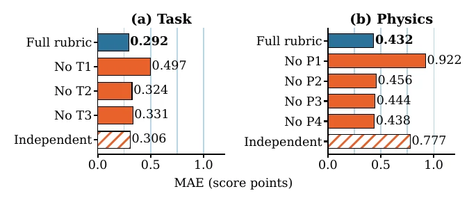
Common Failure Patterns
Most failed steps are simply skipped or left half-done (88.7% of failed Task subgoals). Attaching things (38.6% complete) and transferring material (41.9%) are the hardest. Below are representative examples, grouped by error type, and the ones with annotated frames come from the paper's appendix.
Click a failure type to see representative examples of common errors
Task
Physics · state
Task failures
Skipped prerequisite operations 5 examples
A necessary enabling action is absent, while a dependent operation proceeds.
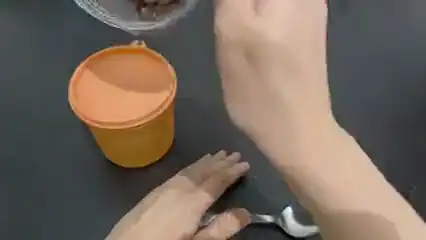
Cosmos-3 Nano67coffee beans seed 202
Some coffee beans transferred from inside transparent jar into inside orange jar, with no beans spilled outside either jar.
Why it failed Beans are poured onto the still-seated orange lid before an opening is established.
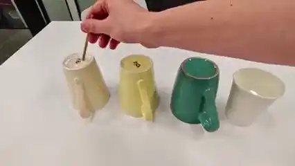
Grok-1.50three cups and water seed 202
Only one of the visible colored cups contains some water, the water in that cup is stirred, and there is no visible spill outside the cups.
Why it failed Stirring is attempted on the bases of inverted mugs without first turning them upright.
- Kling-v3-Pro0
air freshener dispenser seed 101
The green air freshener is installed in the automatic dispenser, and the white air freshener and green cap are inside the green tote bag.
Why it failed The turquoise can is lifted and inserted into the raised cover while its green cap remains attached, and the old white can remains in the actuator bay.
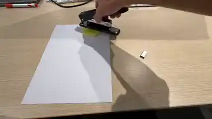
Seedance-2.076staple paper seed 101
The round yellow paper is stapled to the white A4 paper with the fully inserted stapler with its staples filling.
Why it failed The stapler is pressed with its base resting on top of the paper, without feeding the papers between the base and staple outlet.
- Wan-2.758
oil spray pouch seed 202
All fully closed spray and closed toiletries are inside the pink pouch.
Why it failed The bottle is put into the pouch with its cap still open, so the closing step it depends on is skipped.
Incomplete outcomes 5 examples
The relevant operation is attempted, but the required final state or object relation is not established.
- Kling-v3-Pro59
move juice seed 101
Move all of the orange juice from a plastic bottle to a reusable bottle by first emptying the reusable bottle that is filled with water into the sink.
Why it failed The reusable bottle is not fully emptied first, and the orange juice is only partly transferred.
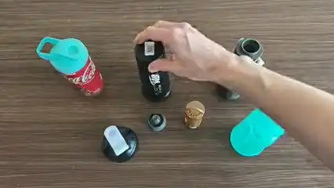
Kling-v3-Pro18bottle cap seed 101
The turquoise container, black bottle, and gray water bottle are all upright on the table and closed with their matching lids: the turquoise lid on the turquoise container, the black-and-white lid on the black bottle, and the small gray cap on the gray water bottle.
Why it failed The turquoise lid is put on the red cup rather than the turquoise container.
- MiniMax-H363
toothbrush case seed 101
Closed toothpaste and folded toothbrush stored inside the closed travel case.
Why it failed Unfolded toothbrush protrudes from the closed case.
- Wan-2.737
shoes socks arrange seed 101
Blue socks placed inside the blue shoes and grey socks placed inside the black sandals, with the blue shoes positioned to the right of the black sandals
Why it failed The grey sock is never placed in the black sandal, and the blue sock stays in it.
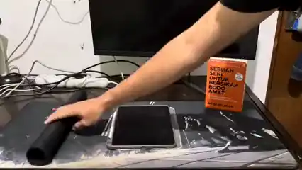
Seedance-2.091desk mat tablet seed 303
Rolled-up desk mat to the left of the tablet, with the book on top of the tablet.
Why it failed The mat remains partly spread beneath the tablet/book after rolling is attempted.
Physics failures · state
World-state inconsistency 5 examples
Object identity, appearance, material, geometry, or assembly state is not preserved across frames.
- Cosmos-3 Nano0
eyeshadow palette seed 303
All makeup items properly closed, with the palette stored inside the white pouch, and all items neatly stored inside the large black pouch on the left.
Why it failed The palette interior changes into an orange cylindrical object while the rectangular housing remains visible.
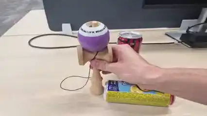
Grok-1.5100kendama can seed 202
Kendama ball properly attached to the standing kendama stick that was originally laid down, with the yellow can stacked on top of the other can.
Why it failed The yellow can acquires a green Sprite label as it is raised onto the other can.
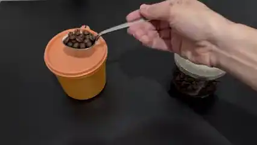
Kling-v3-Pro0coffee beans seed 202
Some coffee beans transferred from inside transparent jar into inside orange jar, with no beans spilled outside either jar.
Why it failed Holes appear in the previously solid white and orange lids during spoon contact.
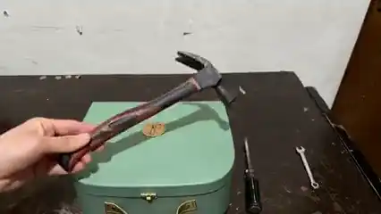
MiniMax-H358screwdriver wrench seed 202
All of appliances are inside the closed green container, with the orange glove placed on top of the closed container.
Why it failed The hammer being held changes into orange gloves over the closed case.
- Seedance-2.0–
dock switch game seed 202
Both Joy-Cons are attached to the Nintendo Switch, the console is placed in the Switch dock, and the game card is inserted with the game card slot cover closed.
Why it failed The fixed console screen changes into a hinged flap.
Object-count inconsistency 5 examples
The scene inventory changes without a corresponding addition, removal, division, or assembly event.
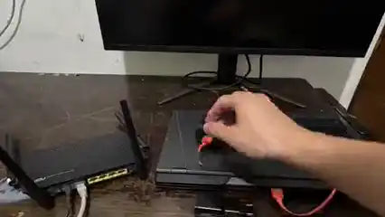
Grok-1.50router laptop cable seed 202
Gray LAN cable plugged into the black laptop, with the orange cable disconnected from the JBL speaker and laptop and connected instead to the black charger block. The closed laptop, router, JBL speaker, and charger block are stacked from bottom to top in that order.
Why it failed Two JBL speakers coexist although the initial scene contains one.
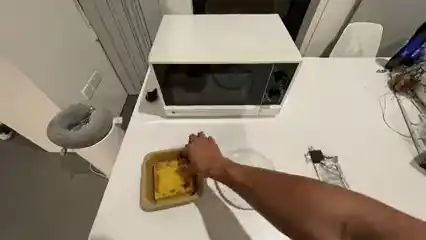
Kling-v3-Pro87lava toast microwave seed 101
The lava toast is placed on the plate with the chocolate on top, and both are inside the microwave.
Why it failed Toast appears on the plate while another toast remains in the original tray.
- Seedance-2.00
three caps seed 303
Each marker is fitted with its matching color cap.
Why it failed A new marker suddenly appears on the table.
- MiniMax-H367
figurine toy box seed 202
Toy cars inside the closed green box, with the AC remote and bowl on top of the box and the cat figurine on top of the bowl.
Why it failed While the toy car is moved, the small bowl next to it disappears.
- Cosmos-3 Nano29
makeup pouch seed 303
The cotton is moved from its pack to be inside the clear container, and the closed cyan lipstick is inside the pouch.
Why it failed A cyan lipstick appears out of nowhere.
Physics failures · interaction
Causal and boundary violations 5 examples
Motion lacks an appropriate trigger, or an object crosses a closed or otherwise inaccessible boundary.
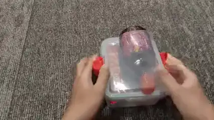
Cosmos-3 Nano42vim lunchbox seed 202
Prepare a closed and latched clear lunchbox containing the wrapped snack and capped bottle (at first cap separated).
Why it failed Bottle protrudes through the closed lunchbox lid.
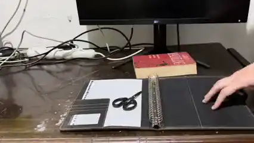
Kling-v3-Pro65paper binder book seed 101
Blank loose-leaf paper attached to the ring binder, with the scissors inside the closed red book resting on top of the closed ring binder.
Why it failed The scissors pass through the closed binder.
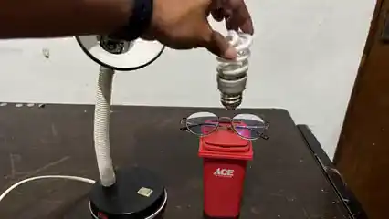
MiniMax-H327light bulb glasses seed 202
Detached spiral light bulb stored inside the closed red trash can, with the glasses still placed on top of the trash can.
Why it failed The bulb is lowered through the closed red bin lid rather than through an opened mouth.
- Seedance-2.0–
figurine toy box seed 101
Toy cars inside the closed green box, with the AC remote and bowl on top of the box and the cat figurine on top of the bowl.
Why it failed The lid closes through the upright cat figurine, leaving it protruding above the continuous closed lid.
- Wan-2.782
screwdriver wrench seed 202
All of appliances are inside the closed green container, with the orange glove placed on top of the closed container.
Why it failed The glove is pulled through the closed solid lid without opening the case.
Manipulation and coupling failures 5 examples
Contact-intensive manipulation violates plausible attachment, separation, or material response.
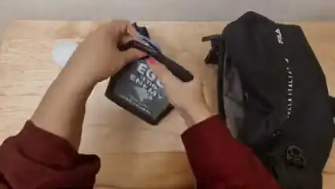
Cosmos-3 Nano20blue pouch eyedrops seed 101
The eye drops is in the blue pouch, then the e-reader and blue pouch that contains the eyedrop are put inside the black bag, and that black bag is finally closed.
Why it failed While the fingers pull at the e-reader top edge, its rigid casing bends and opens into a soft pouch-like mouth containing loose items.
- Cosmos-3 Nano0
laptop setup seed 303
The laptop is opened and connected to power, with the mouse to its right and the headphones in front of its keyboard side.
Why it failed As the hand lifts the headphones from the closed laptop, the rigid lid bows and its edge buckles before resolving into the open display.
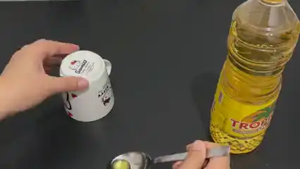
MiniMax-H333cooking oil seed 303
Cup containing one tablespoon of cooking oil.
Why it failed The printed solid base of the inverted ceramic mug is lifted off like a removable lid.
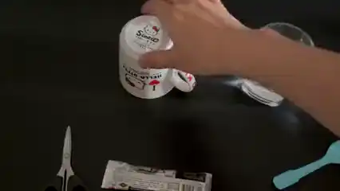
MiniMax-H316make coffee seed 202
The empty cup filled with instant coffee and water, with the mixture stirred using the spoon.
Why it failed The solid base of the inverted ceramic mug is pulled off like a removable lid.
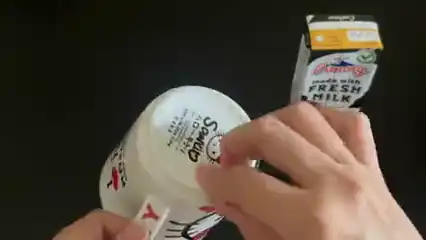
MiniMax-H358pour milk seed 101
The cup contains some milk from the sealed milk box.
Why it failed The hand pinches the printed solid bottom of the inverted mug and lifts it away as a separate disc, opening the ceramic body without fracture.
Mechanism violations 5 examples
Articulated or constrained components move in ways that are incompatible with their structure.
- Cosmos-3 Nano62
stack book laptop seed 202
The closed book is stacked on top of the closed laptop.
Why it failed The laptop display folds down with its active screen facing outward on top rather than inward toward the keyboard.
- Kling-v3-Pro58
laptop open seed 101
Laptop lid open, with the key and pen placed together on the left side of the laptop.
Why it failed During opening the screen rotates diagonally and ends attached along the right side of the keyboard deck, whose trackpad remains at the front.
- Kling-v3-Pro71
laptop setup seed 202
The laptop is opened and connected to power, with the mouse to its right and the headphones in front of its keyboard side.
Why it failed The front notch of the closed laptop faces the viewer, and its right edge then rises around the left edge while the base footprint remains in place and the keyboard orientation changes.
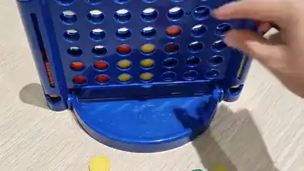
MiniMax-H382four in a row seed 101
Put the final move of the game to win as either side
Why it failed A disc is inserted through a front grid aperture rather than via the board top-entry channels.
- Seedance-2.065
matryoshka battery seed 303
The batteries are inside the closed matryoshka doll; the battery cover is attached to the AC remote; and the doll is on top of the remote.
Why it failed The doll head pivots open on an invented hinge rather than separating at the nesting-shell joint.
Summary
- 64.0best human-rated Final
A large gap to real execution
Even
Seedance-2.0 reaches only 64.0 under human rating, and Cosmos-3 Nano just 3.9. - 88.7% of failed steps
Steps get skipped
Most failures are omissions, where the needed step is skipped or left half-done, so later steps have nothing to build on.
- 38.6% attachment done
Contact-rich changes are hardest
Attaching things (38.6%) and transferring material (41.9%) have the lowest completion of any action type.
- 0.69r with humans
The judge tracks humans
Ego2ActJudge agrees with human consensus far better than the best baseline (RBench, 0.40), close to a single human rater (0.76).
- 0.91AUC, success vs failure
It separates success from failure
Pick any successful and any unsuccessful human recording and the judge scores the successful one higher 91% of the time (Mann–Whitney p < 10−60; mean 95.4 vs 70.4, 305 vs 295 videos), so it tells success from failure.
- 24.0Physics points above humans
The automated judge has an upward bias
Compared with human raters, Ego2ActJudge adds only +8.5 on Task but +24.0 on Physics, so it catches missing steps but overlooks subtle physical errors that people notice.
BibTeX
@article{ego2act2026,
title = {Ego2Act: Evaluating Goal-Directed Manipulation in Egocentric Video Generation},
author = {Irawan, Patrick Amadeus and Parlambang, Iskandar Muda Rizky and Maulana, Rava and Cui, Qinrong and Fuadi, Erland Hilman and Zuhri, Zayd M. K. and Absar, Nanda Ryaas and Elshabrawy, Ahmed and Mulyawan, Wilfried Ariel and Yu, Shoubin and Zhang, Yue and Bansal, Mohit and Aji, Alham Fikri},
journal = {arXiv preprint arXiv:2610.01092},
year = {2026}
}